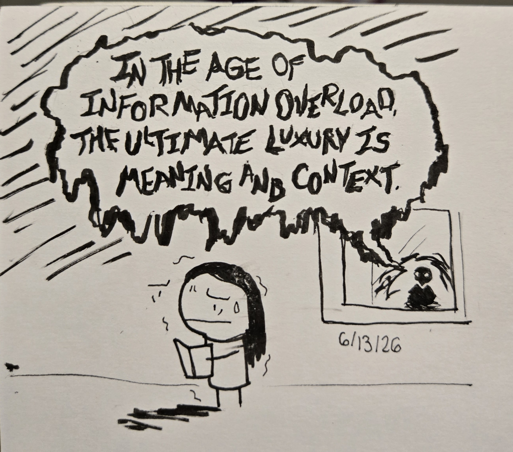

7/02/2026 - Frank Chimero - The Good Room:
Chimero begins his essay by establishing his philosophy of how most technology (mosty applying to web design in this case): "it must not only look good and feel good, it must also be good."
He surmises that at the time of writing his essay, (2018) that web users are only really chasing convenince and anything annoyingly attention grabbing. And to be fair, he still seems correct almost a decade later. The first "place" (examples of what the web should look like) Chimero brings us to is the New York Public Library(beautiful building btw). As a notable "space" as it is free and open too the public. He also appreciates the productive enviroment it brings out regardless of the task and it represents a nice view of the world to him. Hell, you technically don;'t need a reason to be there as long as it's not disruptive.
For his 2nd "good place" Frank goes over the history of Penn Station (once again a Iconic and goregous structure). He chose this particular building as it was demolished and repurposed into what is now Madison Square Garden (a dream venue for upcoming performers). And apparently theres a mall. Although the venue is still somewhat accesible given you have the money and a reason to be there,however, it's not free as it once was when it was Penn Station. It's a venue and a mall which means it has been heavily monetized and privitized.
By comparing the two we see that once space is open to the public and a former public space that has now been a privitized one. We can see this paralell in real time on the web such as wikipedia vs google. Wikipedia (despite its reputation) is a good source of information for almost every little thing (and if you dont trust it, it still provides resources so that you may look for it yourself). Google once was a search engine that would take you to sources and sites based on what you searched. Now it'll show you an AI summary which can be very wrong half the time (since it cannot distinguish misinformation and jokes along with glitches), and even scrolling down to ignore it, you will run into search answers that do correlate but it's clearly paid to be the first thing you see rather than the best thing availble. It's unfortunate that the internet is becoming more commericalized and invasive of the NYPL's of the web and turning everyhing into Madison Square Garden.
6/28/2026 - Parimal Satyal - Against an Increasingly User-Hostile Web:
I remember watching my mom using yahoo mail and me my brother asking her to play an animation of a guy puking over and over again cause it was peak comedy apparently (idk we were weird). And I remember using the computer to play games and listening to minecraft remixes. Despite not actually witnessing late 90's and early to mid 2000's staples such as AOL, my space,and the wild west that were people's home made websites. I did catch glimpes of internet culture around the early and mid 2010's so I did partially grow up watching the approach to internet drastically change.
Personally, I believe my first time witnessing an active hostile "threat" to this culture was the net neutrality drama in 2016 (literally a decade ago). Net neutrailty (according to wikipedia) is, "internet service and online content providers must transfer consistent rates regardless of platform, content, website,etc since the 1990's. I explicitly remember people making fun of the head of the FCC at the time as he condescendingly tells you, "don't worry, you're still gonna watch your movies, and do your youtubes, while we basically commercialize it to death. And I believe it was weakend in some way with companies being treated not like utilities.
This shift in how the internet is percieved and treated is fully highlighted in this articles as it takes place a year after the decision. Satyal, who's seen much more of the internet's timeline explains the slightly gated cultures and how it has changed (kinda for the worst) at the time of writing. They also give some good recommendations for alternatives to google and facebooks stuff. Hell, the internet in 2017 is far more differnet than it is now. (also not the greatest). There's seemingly more and more hostility towards internet users over time (mostly under the guise of safety which many of these companies suck at.) So I'm just curious how Satyal feels now almost a decade later.
6/19/2026 - J.R Carpenter - A Handmade Web:
I've honestly never looked at a website and thought of it as a medium of art rather than a host of information that's found online (like a brochure basically). I've always found programming/coding as extremely impersonal and more functional favoring a more engineering approach. Hell, I was pretty sure that web design was more "making sure people understand what they're seeing and it happens to look nice" rather than an a canvas to have fun with.
The way Carpenter writes and describes "handmade websites" along with what we've been doing in class; made me realize that not every website is made to serve us like a brochure would. After reading this article (and stuff we learned in class thus far) it just feels like someone telling you that doing something was fine the entire time and that technically no one told you couldn't make a amateur y2k kpop demon hunters blog for fun.
6/13/2026 - Ursula K. Le Guin - A Rant on Technology:
I didn't realize before that there was a such thing as a distinguisher of the type of technology (that being "hard" and "soft"). But it does make sense that Sci-fi literature doesn't require certain tech to be featured.
From my understanding, hard technology (in regards to Sci-fi) is dealing more with the mechanics proven and observed in real life with stories like "The Martian" and "Project Hail Mary". The technology and its application is at the forefront of the story.
However, soft technology plays leans into more of the unproven aspect of science such as quantum physics or reanimation. Stories like "Frakenstien" and "Bioshock" fit this category as the actual story is how the technology affects the characters and delves more into sociology/psychology.
What Ursula is pretty pissed about is that their books (that are considered soft tech) have been interpreted to have NO TECHNOLOGY whatsoever. Thanks to this rant, I actually can consider how my comic is presented (i wanna write one sometime later).
6/13/2026 - Luarel Schwulst - My Website is a Shifting House:
